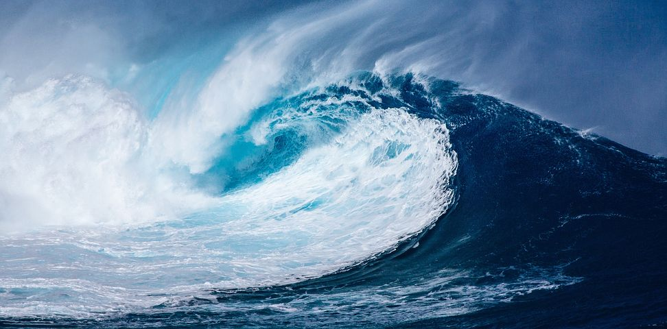

Big Wave Surfing!!!

What is Big Wave Surfing
Big wave surfing is a discipline within surfing in which experienced surfers paddle into,
or are towed into, waves which are at least 20 feet (6.2 m) high, on surf boards known as
"guns" or towboards.[1] Sizes of the board needed to successfully surf these waves vary by
the size of the wave as well as the technique the surfer uses to reach the wave
The Biggest waves in the World
- nazare, portugal
- Maui, Hawaii
- Tahiti, French Polynesia
- Tasmania, Australia
- Half Moon Bay, California
- Donegal Bay, Ireland
Suffer Today

In a big wave wipeout, a breaking wave can push surfers down 20 to 50 feet (6.2 m to 15.5 m) below the surface.
Once they stop spinning around, they have to quickly regain their equilibrium and figure out which way is up.
Surfers may have less than 20 seconds to get to the surface before the next wave hits them. Additionally, the water pressure at a depth of 20 to 50 feet can be strong enough to rupture one's eardrums. Strong currents and water action at those depths can also slam a surfer into a reef or the ocean floor, which can result in severe injuries or even death.[5]
A major issue argued between big-wave surfers is the necessity of the leash on the surfboard. In many instances, the leash can do more harm than good to a surfer,
[citation needed] catching and holding them underwater and diminishing their opportunities to fight towards the surface. Other surfers, however, depend on the leash. Today, tow-in surfboards are equipped with foot holds (like those found on windsurfs) instead of leashes, in order to provide some security to the surfer without generating safety hazards whilst the surfer is underwater.[4]